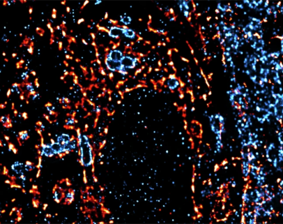
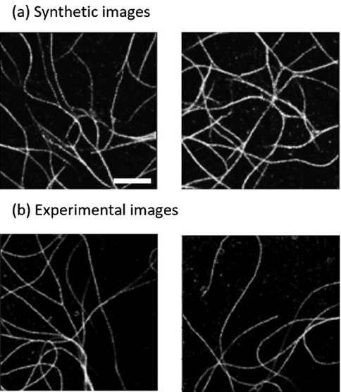

About Me
I earned my BSc in Electrical Engineering from the Technion, followed by a
PhD in Biomedical Engineering, and I am currently a Postdoctoral Research Fellow
at Columbia University (Zuckerman Institute). My research interests span super-resolution microscopy,
neuroscience, signal processing, and machine learning—with an emphasis on
building practical, data-driven tools that extend what we can measure and infer in biology.
Current focus
- Learning-based reconstruction and analysis for microscopy
- Modeling and decoding neural activity from large-scale electrophysiology
- Robust inference under noise, sparsity, and domain shift
Awards
-
2024
Fulbright Postdoctoral Fellowship
-
2024
Citation of Excellence (Jacobs) for outstanding PhD students
-
2021–2023
Excellent Tutor Award (consecutive years)
Research
Selected projects/papers with a brief overview.

One-click reconstruction in single-molecule localization microscopy
Parameter-aware deep learning for robust SMLM reconstruction with less manual tuning, aimed at improving generalization across imaging conditions.
DBlink: dynamic localization microscopy in super spatiotemporal resolution
A deep learning approach that reconstructs high spatiotemporal resolution videos from SMLM recordings, enabling visualization of cellular dynamics with improved temporal resolution.

This microtubule does not exist: super-resolution microscopy image generation by a diffusion model
Generative diffusion modeling for super-resolution microscopy images—exploring realism, diversity, and utility for simulation/augmentation.
Publications
Selected peer-reviewed publications and related proceedings/abstracts.
-
Saguy, A., Xiao, D., Narayanasamy, K. K., Nakatani, Y., Saliba, N., Gagliano, G., Gustavsson, A.-K., Heilemann, M., Shechtman, Y.
(2025). One-click reconstruction in single-molecule localization microscopy via experimental parameter-aware deep learning.
npj Imaging, 3(1), 61.
-
Saguy, A., Nahimov, T., Lehrman, M., Gómez-de-Mariscal, E., Hidalgo-Cenalmor, I., Alalouf, O., Balakrishnan, A., Heilemann, M., Henriques, R., Shechtman, Y.
(2025). This Microtubule Does Not Exist: Super-Resolution Microscopy Image Generation by a Diffusion Model.
Small Methods, 9(3), 2400672.
-
Shalev Ezra, Y., Saguy, A., Levin, G., Weiss, L. E., Alalouf, O., Shechtman, Y.
(2025). High-throughput DNA repair monitoring in Saccharomyces cerevisiae suggests SSB- and DSB-induced chromatin reconfiguration.
Scientific Reports, 15(1), 32302.
-
Hidalgo-Cenalmor, I., Pylvänäinen, J. W., G. Ferreira, M., Russell, C. T., Saguy, A., Arganda-Carreras, I., Shechtman, Y., Jacquemet, G., Henriques, R., et al.
(2024). DL4MicEverywhere: deep learning for microscopy made flexible, shareable and reproducible.
Nature Methods, 21(6), 925–927.
-
Jang, S., Narayanasamy, K., Rahm, J., Saguy, A., Kompa, J., Dietz, M. S., Johnsson, K., Shechtman, Y., Heilemann, M.
(2024). Neural network-assisted single-molecule localization microscopy with a weak-affinity protein tag.
Biophysical Journal, 123(3), 463a.
(meeting abstract)
-
Saguy, A., Alalouf, O., Opatovski, N., Jang, S., Heilemann, M., Shechtman, Y.
(2023). DBlink: dynamic localization microscopy in super spatiotemporal resolution via deep learning.
Nature Methods, 20(12), 1939–1948.
-
Jang, S., Narayanasamy, K., Saguy, A., Rahm, J., Kompa, J., Shechtman, Y., Hiblot, J., Johnsson, K., Heilemenn, M.
(2023). Fast super-resolution single-molecule localization microscopy using exchangeable fluorescent probes.
European Biophysics Journal (supplement), 52(Suppl 1), S59.
(conference abstract)
-
Allen, D., Weiss, L. E., Saguy, A., Rosenberg, M., Iancu, O., Matalon, O., Lee, C., Beider, K., Nagler, A., Shechtman, Y., et al.
(2022). High-throughput imaging of CRISPR- and recombinant adeno-associated virus–induced DNA damage response in human hematopoietic stem and progenitor cells.
The CRISPR Journal, 5(1), 80–94.
-
Ferdman, B., Saguy, A., Xiao, D., Shechtman, Y.
(2022). Diffractive optical system design by cascaded propagation.
Optics Express, 30(15), 27509–27530.
-
Saguy, A., Jünger, F., Peleg, A., Ferdman, B., Nehme, E., Rohrbach, A., Shechtman, Y.
(2021). Deep-ROCS: from speckle patterns to superior-resolved images by deep learning in rotating coherent scattering microscopy.
Optics Express, 29(15), 23877–23887.
-
Saguy, A., Baldering, T. N., Weiss, L. E., Nehme, E., Karathanasis, C., Dietz, M. S., Heilemann, M., Shechtman, Y.
(2021). Automated analysis of fluorescence kinetics in single-molecule localization microscopy data reveals protein stoichiometry.
The Journal of Physical Chemistry B, 125(22), 5716–5721.